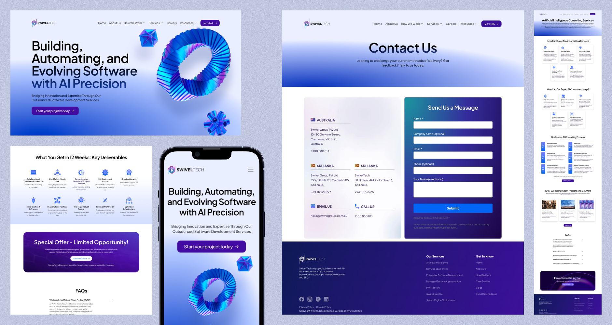
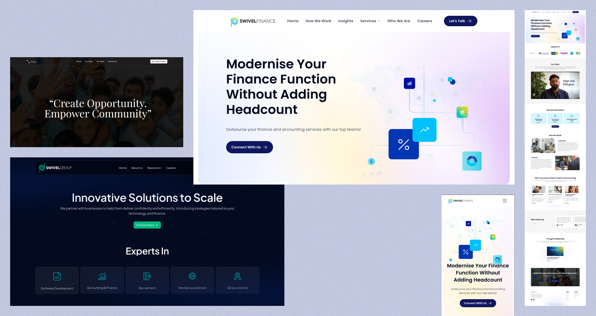

40%
Increased lead conversion rates compared to previous website versions.
Designed and optimized responsive corporate websites and marketing landing pages for multiple Swivel Group brands, including Swivel Group, Swivel Tech, Swivel Finance, and Swivel Foundation. Working closely with the Lead UX Designer, marketing team, and company co-founders, I helped transform outdated marketing experiences into modern, conversion-focused platforms that improved user engagement and strengthened brand presence across digital channels.

Swivel's marketing websites weren't generating the engagement or lead conversions the business needed, and the underlying issues went deeper than visual polish.
Fragmented service architecture.
Navigation structures were incomplete, many of the services offered by Swivel Tech and Swivel Finance had no clear place in the site structure, leaving visitors unable to find or understand the full range of what the company offered.
Outdated visual language.
The sites used old-styled UI patterns that undersold the business. Stakeholders wanted the design itself to signal that Swivel was building with AI, a defining technology of the moment, but nothing on screen communicated that.
Unclear user journeys.
Pages didn't guide visitors toward action. The path from landing on a site to understanding Swivel's value proposition to taking the next step was undefined.
No unified brand system.
Multiple brand websites existed with inconsistent colours, typography, and messaging, so the same visitor moving between Swivel entities encountered a different experience each time.
The result was a set of websites that failed to reflect the quality of the work Swivel actually delivered, and gave stakeholders no way to present the company as the modern, AI-forward organization it was becoming.
Working closely with the Lead UX Designer, I contributed across the full design process:
Collaborated with the Lead UX Designer throughout the end-to-end design process
Designed responsive web, tablet, and mobile experiences
Created multiple design explorations and compared alternative solutions to identify the most effective direction
Built interactive prototypes for stakeholder reviews and usability validation
Worked closely with developers and QA teams to ensure smooth implementation and design consistency
Rebuilt navigation around a complete service architecture.
Restructured the site map so every Swivel Tech and Swivel Finance service had a clear, findable place, replacing incomplete navigation with a structure visitors could actually use to understand the full range of what the company offered.
Redesigned the visual language to signal AI-forward positioning.
Replaced outdated UI patterns with a modern interface that gave stakeholders what they'd been missing, a design that visually communicated Swivel was building with AI, not just claiming to.
Mapped clear user journeys from landing to action.
Restructured page flow and content hierarchy so every page guided visitors toward a defined next step, turning an undefined path into a deliberate one that supported lead generation and contact conversion.
Established one unified design system across all four brand sites.
Introduced consistent colours, typography, and messaging across Swivel Tech, Swivel Finance, and the wider group ecosystem, so a visitor moving between entities now experiences one coherent brand instead of four disconnected ones.
Delivered fully responsive experiences
Delivered fully responsive experiences across desktop, tablet, and mobile, ensuring the new navigation, visual language, and user journeys held up consistently regardless of device.

40%
Increased lead conversion rates compared to previous website versions.
↑
Improved user engagement and overall reach across all company websites.
30%
Improved workflow efficiency through AI-powered features introduced across platforms.
4×
Strengthened brand consistency and digital presence across multiple business units.
Collaborating alongside a Lead Designer sharpened my ability to align on design direction quickly while still contributing distinct creative perspectives
Designing across multiple sub-brands within one system reinforced the importance of flexible component libraries that maintain consistency without limiting expression
Stakeholder prototype reviews taught me to present design rationale alongside visuals - decisions land better when the thinking behind them is made explicit
Working with QA teams highlighted how small implementation gaps can erode the designed experience, making design-dev alignment a continuous process rather than a one-time handoff